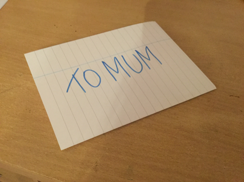

Fred wrote a note on a piece of paper, folded it four times, and then inscribed "To Mum" on top $($see photo$)$. Then he unfolded the note, wrote something else, then again folded the note along the fold lines randomly $($not necessarily as before$)$ and left it on the table, putting it face down. Find the probability that the inscription "To Mum" is still on top.

The sheet has two sides, and each is divided by fold lines into four parts. Thus, there are 8 sections over both sides. Each of these sections can end up on top with equal probability when the sheet is randomly folded along the old fold lines. Therefore, the probability that on the top will be that section on which "To Mum" is written is 1/8.
1/8.